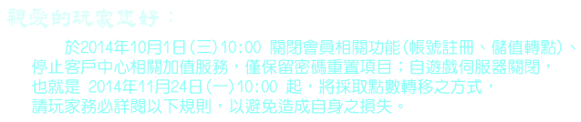

- (1) 點數轉移申請期間為2014年11月24日(一) 10:00 起至 12月22日(一)10:00結束，
逾期恕不受理。 - (2) 點數轉移申請限定需為GF以及遊戲帳號皆為本人之狀況下，以避免損害玩家權益。
- (3) 點數轉移將於2014年12月22日(一)10:00結束收件後開始統一進行，審核期7日、
作業期14日，預計將於21個工作天內處理完畢。 - (4) 請屆時請玩家點選本頁下方點選【申請點數轉移】進行殘點轉移申請。
- (5) 殘餘點數轉移之遊戲：新仙境傳說(月)、新仙境傳說(免)、新仙境傳說(老玩家)、
新仙境傳說(幸福起飛)、三國群英傳、信長之野望、天使之戀、完美世界、
天龍八部3、尬舞、芙蘭戰記、萌萌彩虹島、聖鬥士星矢、新龍之谷。
殘點 相關處理規則如下：
遊戲名稱:女皇之刃
角色名稱:
移轉平台:
移轉的遊戲名稱:
移轉的伺服器名稱:
移轉的遊戲帳號:
移轉的角色名稱:
會員姓名:
聯絡電話:
E-MAIL:
本人同意所提供的個人資料，為此次【女皇之刃點數轉移】頁面
之使用外，其他均依個人資料暨隱私權保護政策辦理。
之使用外，其他均依個人資料暨隱私權保護政策辦理。